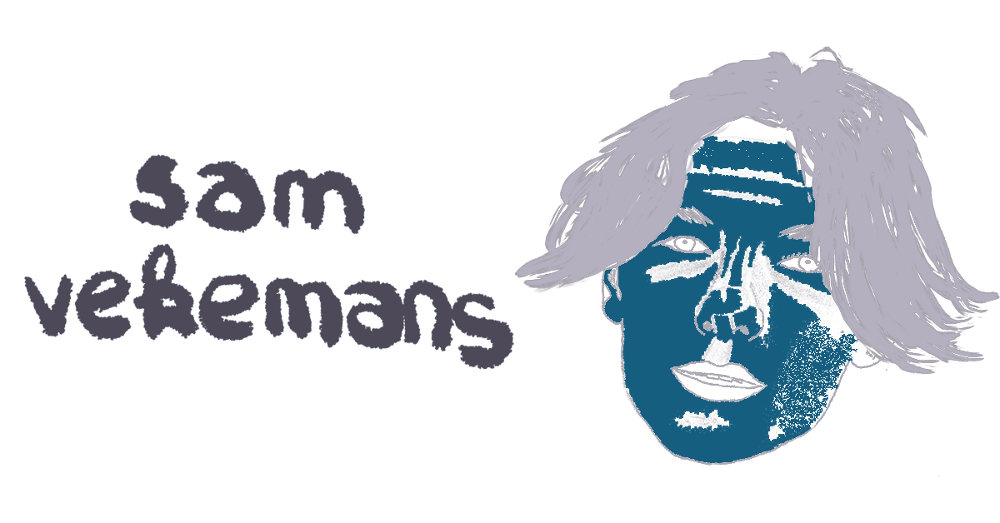
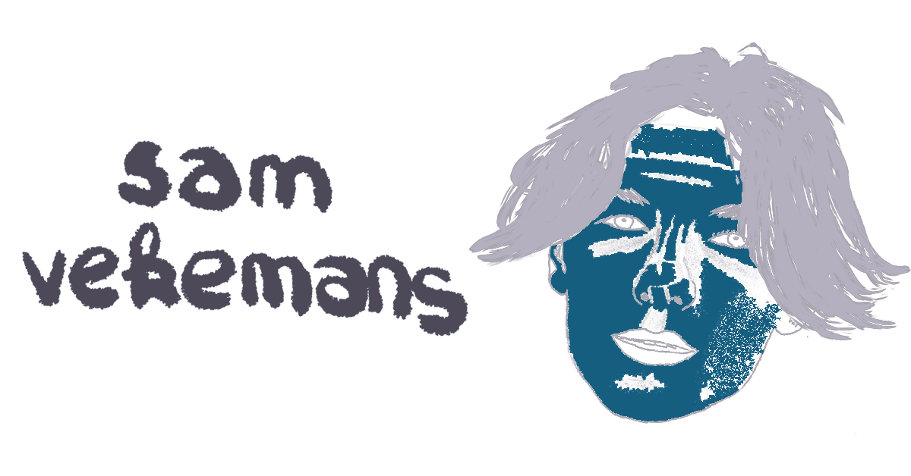

Over Mij
Ik ben Sam Vekemans, ik ben een student op de Hva. Ik studeer CMD, dit is communicatie multimedia design. Dit houd in dat ik veel met designen van websites bezig ben. Hierbij zijn we altijd bezig met hoe we de beste ervaring aan de gebruiker mee kunnen geven. Ook zijn we veel bezig met programmeren. Ik zelf hou erg van programmeren maar ook van het designen. Ik zou het liefst alles doen, met de klant praten over zijn/haar ideeën, hierna een design voor hem/haar maken. Hierna dit design gaan programmeren tot een werkende website.